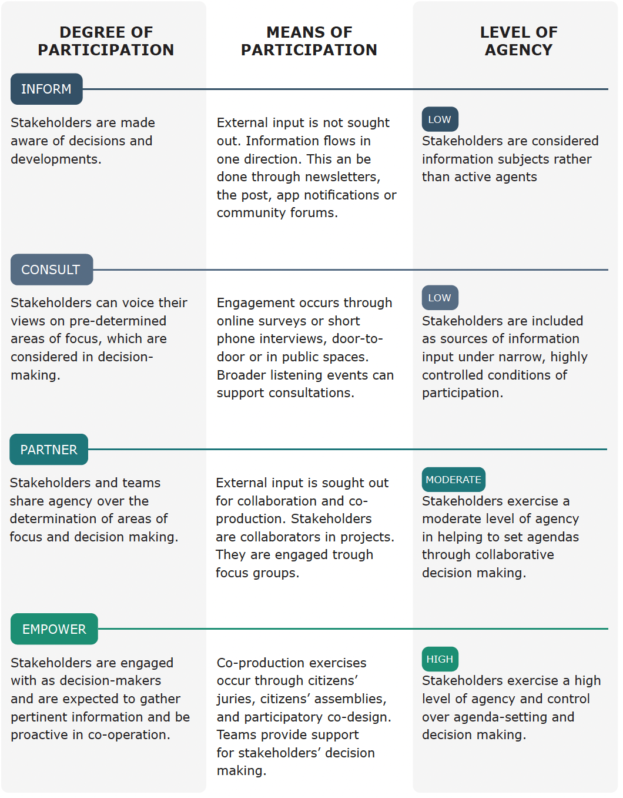

Engage Inclusively¶

If reflection on power dynamics, positionality, and the purpose of the project being developed is an inwards-facing process for the AI project team, stakeholder engagement and community involvement represents the outwards-facing side of the coin.
As we have seen, engagement and involvement with the community can bolster a project’s legitimacy, social license, and democratic governance as well as ensure that its outputs will possess an appropriate degree of public accountability and transparency.
A diligent stakeholder engagement process can help teams to:
- identify stakeholder salience,
- undertake team positionality reflection, and
- facilitate proportionate community involvement and input throughout the research project workflow.
This process can also safeguard the equity and the contextual accuracy of impact assessments and facilitate appropriate end-to-end processes of transparent project governance by supporting their iterative revisitation and re-evaluation.
It is important to note, however, that all stakeholder engagement processes can run the risk either of being cosmetic or tokenistic. They can be employed to grant legitimacy to projects without substantially and meaningfully engaging with the impacted communities (i.e., being one-way information flows or nudging exercises that serve as public relations instruments).[@arnstein1969a]-[@tritter2006]
To avoid such hazards of superficiality, team members should shore up a proportionate approach to stakeholder engagement through deliberate and precise goal setting.
Factors that affect stakeholder engagement objective
-
Assessment of risks of adverse impacts: As we have stressed throughout this course, stakeholder involvement in projects should be proportionate to the scope of their potential risks and hazards.
-
Assessment of positionality: Stakeholder involvement should address positionality limitations. For instance, in cases where the identity characteristics of team members do not sufficiently reflect or represent significantly impacted groups, stakeholder participation can “fill gaps” in knowledge, domain expertise, and lived experience.
-
Assessment of project needs: Stakeholder involvement should help team members strengthen their ability to frame questions and to tackle problems. After all, those impacted by the project are the most likely to know what their problems are, and thus, what issues the project should tackle. Team members should explore the optimal means for community members to actively contribute to their practices.
Practical challenges will be encountered when trying to operationalise a stakeholder engagement process. For example, limits on available resources and tight timelines could be at cross-purposes with the degree of stakeholder involvement that is recommended by team-based assessments of research needs, potential hazards, and positionality limitations. Likewise, the chosen degree of appropriate public participation may be unrealistic or out-of-reach given the engagement barriers that arise from constraints on the capacity of vulnerable stakeholder groups to participate, difficulties in reaching marginalised, isolated, or socially excluded groups, and challenges to participation that are presented by digital divides. In these instances, project teams should take a deliberate and reflective approach to deciding on how to balance engagement goals with practical considerations and should, at all events, make explicit the rationale behind their choices and document this.
Regardless of any potential trade-offs, the establishment of clear and explicit stakeholder engagement goals should be prioritised. Relevant questions to pose in establishing these goals include:
- Why are we engaging with stakeholders?
- What do we envision the ideal purpose and the expected outcomes of engagement activities to be?
- How can we best drawn on the insights and lived experience of participants to inform and shape our project?
